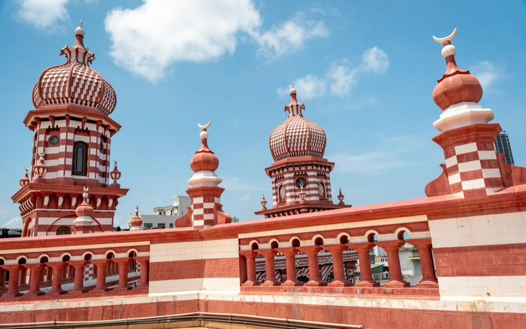

1Pettah market & the Red Mosque
Colombo at full volume: crowded market lanes next to the Fort, carts and horns, fabric, shoes and gadgets piled high. In the middle of it stands Jami Ul-Alfar, the Red Mosque, striped red and white like a stick of rock — free to visit, with a guide from the mosque to show you round.
From townNext to the Fort
OpenMarket about 9 AM–7 PM · mosque from 9:30 AM
Give it2 hours
EffortModerate · hot, crowded, on foot
TicketFree · the mosque guide is free too
Good to knowGo before ten, ahead of the heat and the crush. It’s mostly cash, keep your phone and wallet in front of you, and treat every famous brand as a copy. At the mosque, use gate 3 and dress modestly. On Fridays visitors are let in only in the afternoon — times change, so check the day before.